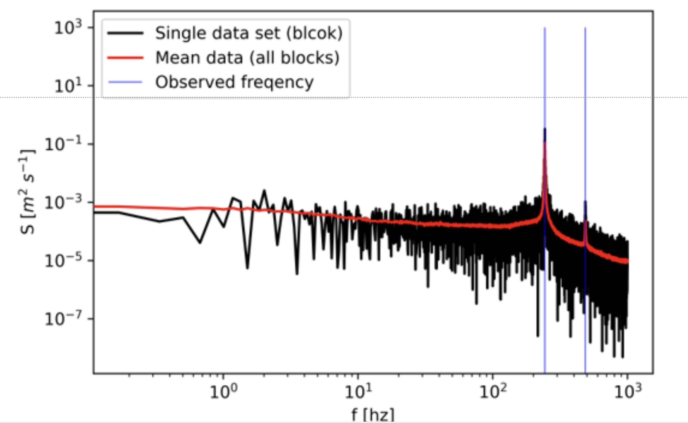

PIV
The object of this experiment is to learn how to use the Hot-wire method to get a point measurement of velocity. Then do spectral analysis on shedding behind a cylinder in the flow.
The setup uses a jet made in-house. This jet has a honeycomb structure to make the flow more laminar. The jet nozzle has a smooth contraction going from Ø240 mm to Ø100 mm. Before the contraction there is a pressure tap to measure the speed of the jet. This gage pressure is measured using a FCO560 micromanometer. Temperature is measured using a COMARK C28 K TYPE. Measured with-in the airstream. The room pressure is measured using a Vaisala barometer. The hotwire is made by Dantech and is a Ø70 µm fiber probe of length 3 mm. The hotwire is of the CTA type. The hotwire sends data to a miniTCA box and then to a National Instruments NI-Daqmx this is then controlled through a Python script.
 Hot-Wire setup
Hot-Wire setup
Calibration is done by matching hotwire voltage to the velocity calculated using the pressure tab. This is done at various points and a fourth-degree polynomial is match to the data. This polynomial can then be used to convert voltage data to velocity data.
Calibration curveThe probe was placed at a point slightly outside the nozzle diameter at 1cm away from the nozzle in the streamwise direction. From that point, there were measurements taken at 2mm intervals for 20mm. Then five measurements at 4mm intervals, eight at 5mm intervals and again five at 4mm intervals and finally ten measurements at 2mm intervals. In total, 39 measurement points Because the velocity at the boundary layer is expected to change a lot more quickly there are more points of measurements in the boundary layer. The velocity is expected to have little variance in the mean flow, close to the jet nozzle. Each measurement was taken at 2000 Hz for one second, 20 times on every measurement point.
Velocity profilesthe left figure shows the velocity profile given by the measurements at 10 mm away from the nozzle. The figure shows the steep angle at which the velocity increases as soon as the measurement is taken inside the boundary layer. The velocity inside the flow stays relatively consistent although not within error of the mean velocity of the flow. This is likely due to the very low uncertainty of the measurements. A likely explanation for the unusually low uncertainty is a loose thread that was later found on the probe, causing the cooling of the hot wire to be slowed. This causes the measured velocities to appear more averaged out. The right figure shows the velocity profile at 65 cm away from the nozzle. The measurements were taken at an interval of 15 mm for 300 mm, starting from 150 mm radially away from the middle of the nozzle. The velocity has dispersed a lot more and follows closely a normal distribution, although not within error. Likely due to the same reason as stated before. The uncertainty is highest in the steepest part of the velocity profile due to the high standard deviation in the same area. This is due to the effect the viscous forces have on the jetflow.
For the spectral a 10 mm bar is placed in front of the jet exit. This causes oscillating vortex shedding. This frequency can be estimated beforehand by using the Strouhal number. This estimate can be used to find the sampling frequency, as twice the estimated frequency. For the experiment it was chosen to go the safe way and use a sampling frequency of 1700 Hz. Each block samples for 7000 times the estimated integral timescale. Resulting in 7 seconds. giving a total of 11900 samples. 400 blocks were chosen to get a low enough variability.The results from the test can be seen in the figure bellow. where a single block (black line), The average of all 400 blocks (red line) and the observed frequencies (blue lines)
Spectral analysisHere it is observed that there are two frequencies. The vortex shedding frequency and the double frequency. This is being observed because we played it safe and chose 1700 Hz.The shedding frequency is observed to be 244 Hz, and the double is 487 Hz. This matches the estimated shedding frequency of around 210 Hz.
PIV